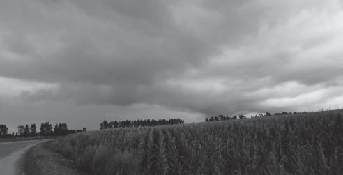
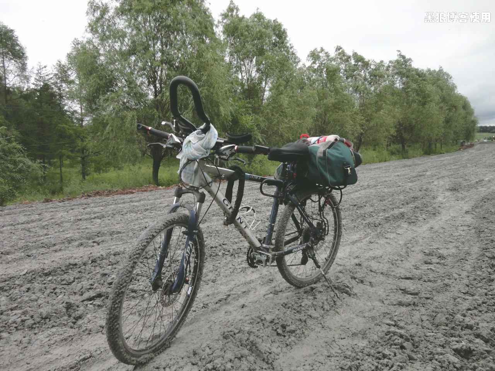

骑行长春（最后一天，终点长春）
黑狼语录：
- 如果让我再来一次的话，我希望是一万年后。
在伊通县探亲休息这两天，亲朋同学好友听说我是骑自行车回来的，都颇为吃惊地张大了嘴巴；在兴冲冲地看完我的自行车后，再次张大了嘴巴。因为我的自行车实在是超出了他们的想象，卖相太差太普通太烂，和我骑行 1000 多公里，奋战 7 天的“壮举”不太般配。当大家问我自行车多少钱买的，怎么会是如此普通的山地车外形？唉，没办法，我只能大谈什么：就是要用最普通的自行车来完成一些高难度的事情。
伊通县到长春市大约 60 多公里，据说好多地方在修路，这段路，并不好走。
今天乌云密布，应该会淋雨。
10:14 大约骑行了 27 公里。走了一段 3 公里长的泥浆路，是那种铺了水泥石子而形成的泥浆。
（时间不详）又是一段几公里的泥浆路，今天大约走了 4 段泥浆路，每段都有几公里长。
离长春还有 20 多公里，莫名其妙的有些情绪低落。这次的骑行已经是要结束了，返程肯定是坐车回北京了，因为我心中已经有了些畏惧。返京后，我将返回到现实生活中，然后我又会迷茫、发呆好久吧。
一路上乌云密布，路上到处都是刚下完雨后的积水，但我并没有赶上大雨，也算是上天对我的眷顾吧。
到了下午 14 点多，才到了终点（长春市劳动公园附近吧），73 公里。今天的体力消耗很小，主要是泥浆路及情绪低落影响了速度。
这次从北京到长春的全部里程是：1138 公里。